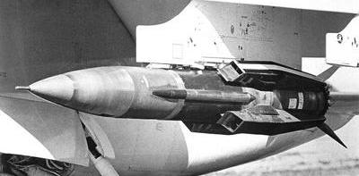
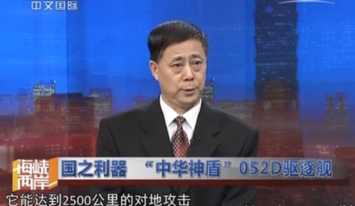

2014-07-27 16:29:00
今天有台灣媒體引用美國軍事分析師Robert Haddick的文章（http://warontherocks.com/2014/07/chinas-most-dangerous-missile-so-far/）報導了中共的新一代反艦飛彈YJ-12（“鹰撃12”）。其實美國人對中共的軍事分析向來後知後覺（YJ-12的消息大陸軍友一年半前就傳遍了），而且經常性的以偏概全（YJ-12只是中共新一代反艦飛彈的中階角色），所以我覺得有必要在此做個完整的討論。
共軍的反艦飛彈來源甚早，自50年代就仿製成功蘇聯“冥河”反艦導彈，其後並在其基礎上發展出自己的第一代反艦導彈“上游”、“海鷹”系列（其出口版被西方稱為“蠶”式）。1982年，英阿爆發福島戦争，法製的“飛鱼”飛彈大出風頭，中共注意到其蘇系的舊式導彈太過於龐大笨重，開始重視第二代的反艦飛彈，由於研究機構已經自費預研了十多年，進展甚快，共研發了三款，即“鹰撃”6，7和8系列。其中重型的鹰撃6為現代化的縮小版海鷹飛彈，重1.3噸，最新版的YJ-62巡航速度和終端速度均為0.9馬赫，最大射程600公里，有效射程450公里，彈頭為300公斤高爆穿甲裝藥，足以撃沈導彈巡洋艦。輕型的鹰撃7系列重120至320公斤，巡航速度和終端速度均為0.8馬赫，最新版的C-705（“C”系列是“YJ”出口版的編號）有效射程140公里，彈頭重130公斤，足以重創排水量5000噸以下的艦艇；共軍自己只少量裝備了鹰撃7系列，主要用於出口，最大的客户是伊朗。中型的鹰撃8是近年來共軍的主力反艦飛彈，尺寸和性能都與飛鱼飛彈相似，最新版的YJ-83重800公斤，巡航速度為0.85馬赫，終端速度有稱1.3馬赫（未證實），有效射程250公里，彈頭重165公斤，適合打撃7000噸以下的艦艇。目前054A級護衛艦和052B級以前的驅逐艦均以YJ-83為主要反艦武器；052C級驅逐艦則裝備了YJ-62。這两型導彈都裝有數據鏈，可以在飛行中途變更航線或目標。

美軍的ALVRJ試験飛彈
近年來，由於國軍的雄風2和雄風3（源自美軍的ALVRJ，Advanced Low-Volume RamJet，先進小型衝壓飛彈）的刺激，更由於美國海軍開始廣泛部署RIM-116近防飛彈，將軍艦對反艦飛彈的攔截距離一口氣從方陣系統的2公里外推到9公里，共軍開始積極研究高超音速反艦飛彈，以壓縮近防系統的反應時間，其中最重要的是獨步全球的東風21D反艦彈道飛彈，不過我今天將專注在巡航飛彈上。
共軍要研究超音速巡航飛彈有两個着手點，首先是随SU-30MKK一起買到的Kh-31空射導彈，其次是随着基洛級潜艇買到的3M-54潜射導彈，两者都於90年代末期進入共軍戦鬥序列。因為中共對衝壓引擎有充分的技術累積，Kh-31很快就仿製並改良成功，稱為YJ-91，其全重600公斤，有效射程120公里。由於超音速飛行阻力大，在同様尺寸的條件下射程只有使用渦扇引擎的亜音速飛彈的1/3左右，Kh-31的射程也就成了它最大的軟肋，在標准六型防空飛彈的射程已達到240公里的今日，120公里是遠遠不勝任的，於是共軍在YJ-91的基礎上將其放大以沿展射程，這就是YJ-12。YJ-12重2噸，射程300公里，巡航速度3馬赫，終端速度4.5馬赫，RIM-116對其只有一發的反應時間，突防機率遠大於YJ-62和YJ-83。YJ-12的缺點是其太大太重，原本只有數量稀少的H-6轟炸機能够携帶，中共海軍為此特别於2013年開始改進已大量部署的戦鬥轟炸機，要將所有的JH-7A都升級為JH-7B，其主要的改進點就在於增强了機體结構以掛載YJ-12並改裝了與其配套的新雷達。
3M-54針對超音速飛行阻力大的問题，設計為亜音速巡航，超音速（3馬赫）衝刺，是個很有創意的方案。中共的仿製計劃在2000年交給中國航天科工集團三院執行，2011完成，編號為YJ-18。目前其射程有些争議：大部分西方媒體稱其為220公里，我覺得對一個1.4噸重，巡航速度只有0.8馬赫的飛彈來說，實在太小了，而且與YJ-12相比也没什麼價值；以YJ-62為比較，其射程應该是300多公里才合理。不過中共保密很嚴，YJ-62的真正射程在飛彈部署了二十幾年後才洩漏於世，我們很可能在可見的未來還要繼續争議下去。
另外一型新式反艦飛彈叫作YJ-100，這是一個純亜音速的飛彈，由CH-10巡航飛彈改裝而成，西方媒體稱其射程為600公里，又是一個極不合理的低估。CH-10的射程至少是1500公里（可能是2500公里），就算是把巡航速度從0.7馬赫提升到0.8馬赫犧牲了一點射程，也應該還遠在1200公里以上，不過這問题大概還要再等幾年才能蓋棺論定。目前的消息是YJ-100没有隐身處理，因此比美軍的LRASM（Long Range Anti-Ship Missile，長程反艦飛彈）落後了一代。中共飛彈用的小型渦輪風扇引擎還要幾年才能量產，因此CH-10和YJ-100在2020年左右應該會做一次大升級，屆時如果两者都隱身化，我將是一點也不會吃驚的。
【後註】2014年十月1日，中共軍方代表在慶祝其國慶的電視節目中證實CH-10的射程為2500公里，YJ-62的射程為600公里。 